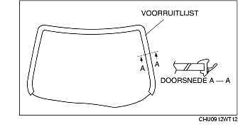
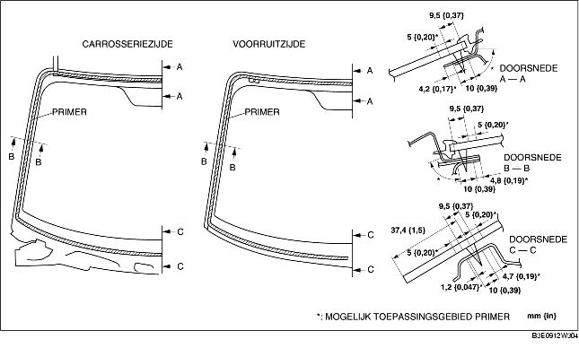

PLAATSEN VOORRUIT
B3E091263900W02
-
Waarschuwing
-
• Door een hobbymes met blote handen te gebruiken kan er letsel ontstaan. Draag altijd handschoenen bij het gebruik van een hobbymes.
-
Opmerking
-
• Als er tijdens het plaatsen van de ruit een portier gesloten wordt terwijl de portierruiten gesloten zijn, kan dit scheurtjes in de kit veroorzaken of kan de voorruit door de luchtdruk naar buiten wordt gedrukt. Laat alle portierruiten open zolang de kit nog niet is uitgehard.
1. Snijd de oude kitlaag langs de omtrek van de sponning met een hobbymes weg tot de laag nog 1-2 mm {0,04-0,07 in} dik is.
2. Als de kitlaag ergens langs de omtrek helemaal is losgekomen, ontvet deze plaats dan, breng er primer op aan en laat deze ongeveer 30 minuten drogen. Breng vervolgens een laag kit aan van 2 mm {0,08}.
3. Reinig en ontvet zorgvuldig een rand van ongeveer 50 mm {1,97 in} breed langs de omtrek van de voorruit en het hechtvlak op de carrosserie.
4. Voer de volgende procedure uit als de oude ruit opnieuw wordt geplaatst:
-
(1) Plaats de pennen op de tijdens het verwijderen gemarkeerde posities.
-
(2) Plaats de voorruitlijst.

5. Gebruik de glasprimer alleen voor de ruit en de carrosserieprimer alleen voor de carrosserie en de lijst. Laat ze gedurende ongeveer 30 minuten drogen.
-
Opmerking
-
• Zorg ervoor dat er geen vuil of vet op de hechtvlakken komt en raak ze niet aan. Anders hecht de primer mogelijk niet goed op de ruit of de carrosserie, waardoor lekkage kan ontstaan.

6. Breng op de aangegeven plaatsen ruitenkit aan op de ruit.
7. Plaats de paspennen in de carrosserie en plaats de voorruit.
8. Druk tegen de pennen tot de borglip vastklikt in de carrosserie.
9. Druk de ruit langs de gehele omtrek aan en zorg ervoor dat de speling overal aan de specificaties voldoet.
10. Plaats de volgende onderdelen:
-
(1) Leeslampje (Zie VERWIJDEREN/PLAATSEN LEESLAMPJE.)
-
(2) A-stijlbekleding (Zie VERWIJDEREN/PLAATSEN A-STIJLBEKLEDING.)
-
(3) Zonneklep (Zie VERWIJDEREN/PLAATSEN ZONNEKLEP.)
-
(4) Regensensor (uitvoeringen met automatisch ruitenwissersysteem) (Zie VERWIJDEREN/PLAATSEN REGENSENSOR.)
-
(5) Binnenspiegel (Zie VERWIJDEREN/PLAATSEN BINNENSPIEGEL.)
-
(6) Paravan (Zie VERWIJDEREN/PLAATSEN PARAVAN.)
-
(7) Ruitenwisserarm en -blad (Zie VERWIJDEREN/PLAATSEN WISSERARM EN -BLAD.)
11. Laat de kit volledig uitharden.
-
Hardingstijd kit: 24 uur